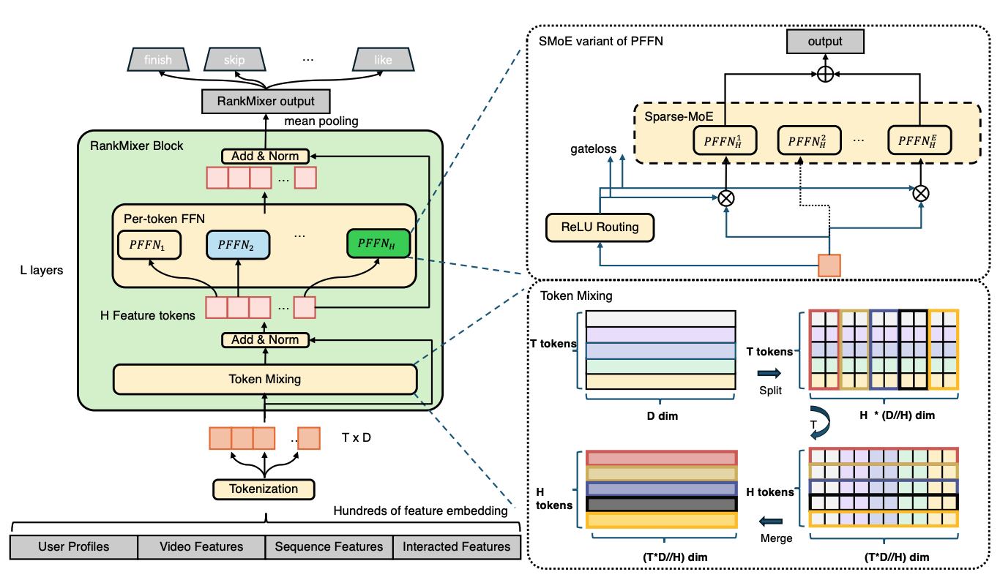

6.4. Rankmixer: 硬件效率优化¶
传统深度学习推荐模型（DLRM）在GPU上的Model FLOPs Utilization（MFU）通常只有4-5%，而大语言模型可达到40-60%。这个十倍的效率差距直接导致推荐模型无法享受scaling law的红利——即使增加参数量，大部分新增计算也被浪费在低效的内存访问上。
这一问题的根源在于传统DLRM继承自CPU时代的架构设计。这些模型在GPU上暴露出三个根本性问题：（1）核心操作以memory-bound为主，embedding lookup、特征交叉、序列建模等操作的访存量远大于计算量；（2）计算图高度碎片化，由多个独立的手工模块串联而成，每个模块的kernel launch开销和global memory传输累积成显著瓶颈；（3）无法充分利用Tensor Core，大部分操作都是小规模向量运算或不规则访存，无法发挥GPU矩阵乘法加速单元的效能。
RankMixer (Zhu et al., 2025) 通过hardware-aware的架构设计，从根本上解决了这一问题。其核心原则是从硬件特性反推架构设计，将推荐模型重构为统一的、GPU友好的计算图：用Token Mixing替代Self-Attention以降低复杂度，用Per-Token FFN捕捉特征异质性，用Sparse MoE实现参数高效的模型扩展。
6.4.1. RankMixer整体架构¶
图 图6.4.1 展示了RankMixer的完整架构。模型核心是\(L\)层堆叠的RankMixer Block，每个block包含Multi-head Token Mixing（替代Self-Attention）和Per-Token FFN（捕捉特征异质性）两个模块。输入特征经tokenization转换为\(T\)个统一维度的token，经\(L\)层block处理后通过mean pooling产生最终输出。
{kind=link}

图6.4.1 RankMixer整体架构¶
每个RankMixer Block的前向传播为：
整体复杂度为\(O(LTD^2)\)。在Sparse MoE版本中，Per-Token FFN可替换为专家网络，在保持推理成本的前提下扩展参数量。RankMixer的设计遵循三个核心原则：（1）所有核心操作应为矩阵乘法，充分利用Tensor Core；（2）计算图应尽可能简洁，减少kernel launch开销；（3）保持推荐任务所需的表达能力。
6.4.2. Token Mixing机制¶
Self-Attention的计算复杂度为\(O(T^2D)\)（\(T\)为token数量，\(D\)为隐藏维度），来自于需要计算所有token pair之间的相似度矩阵\(QK^T\)。在推荐场景中特征数量可达数百上千，这个\(T^2\)项成为显著瓶颈。RankMixer的核心洞察是：推荐任务需要的是token之间的信息混合（mixing），而非基于相似度的动态加权（attention）。例如学习“年轻用户在一线城市更喜欢科技类物品”这样的高阶交互，本质是让多个token的信息融合形成新的representation，而不一定需要显式计算token pair相似度。
Token Mixing的核心思想是：在特征维度而非token维度进行混合。如图 图6.4.1 右下角所示，给定输入token序列\(\mathbf{X} \in \mathbb{R}^{T \times D}\)（\(T\)个token，每个维度为\(D\)），Token Mixing包含两个步骤。
首先是Multi-head decomposition。将每个token分解为\(H\)个head：
其中\(\mathbf{x}_t^{(h)} \in \mathbb{R}^{D/H}\)是第\(t\)个token的第\(h\)个head。这和multi-head attention的分解方式相同，不同head可以捕捉不同类型的交互模式。
然后是Token-wise mixing。对每个head，将所有token的该head部分拼接起来：
这个操作的关键在于：它改变了数据的组织方式，从“按token组织”变为“按head组织”。原始输入\(\mathbf{X}\)是\(T\)个长度为\(D\)的向量（每个token一个向量），经过SplitHead和Concat后，变为\(H\)个长度为\(TD/H\)的向量（每个head一个向量）。在每个head内部，不同token的特征紧密排列在一起，为信息混合创造了条件。实际实现中，RankMixer设置\(H=T\)，这样每个“head”实际包含了所有token的一部分特征。经过mixing后，token数量保持不变，便于residual connection。
从复杂度角度看，Token Mixing的计算量为\(O(TD)\)（主要是内存重排操作）。相比self-attention的\(O(T^2D + TD^2)\)，当\(T\)较大时（推荐场景中\(T\)可能有几百上千），Token Mixing避免了\(T^2\)项，复杂度显著降低。当\(T\)和\(D\)相近时，两者复杂度相当，但Token Mixing没有softmax的normalize操作（需要额外的reduction kernel），进一步减少了kernel开销。
一个关键问题是：不显式计算token pair之间的相似度，如何保证能捕捉它们之间的交互？答案在于多层堆叠。单层Token Mixing实现的是“feature-level mixing”——不同token的同一维度特征会相互影响（因为它们被concat到同一个向量中）。但当堆叠多层Token Mixing时，第1层的每个token输出融合了所有token的一阶信息，第2层的输入已经是第1层mixed后的结果，每个token已经包含其他token的信息，第2层再次mixing实现了二阶交互。形式化地，令\(f(\cdot)\)表示单层Token Mixing，\(\mathbf{X}_0\)为输入，则：
由于每层Token Mixing都在特征维度进行线性变换（通过后续的FFN实现），堆叠\(L\)层可以建模token之间的\(L\)阶多项式交互。在实际推荐模型中，\(L\)通常为6-12层，足以捕捉所需的高阶特征交叉。
从硬件角度看，Token Mixing的核心操作是数据重排（SplitHead和Concat），这在GPU上可以通过高效的kernel实现。重排操作可以设计为连续的内存读写（coalesced memory access），充分利用GPU的内存带宽。相比attention需要计算softmax（需要全局归一化），Token Mixing的操作是局部的、可并行的。更重要的是，SplitHead、Concat和后续的FFN可以融合成一个kernel，减少kernel launch overhead，这是MFU提升的关键所在。
6.4.3. Per-Token FFN¶
从图 图6.4.1 左侧的RankMixer Block可以看到，Per-Token FFN为每个token配备了独立的FFN参数。标准Transformer的FFN对所有token使用相同权重：\(\text{FFN}(\mathbf{x}) = \mathbf{W}_2 \cdot \text{GELU}(\mathbf{W}_1 \mathbf{x} + \mathbf{b}_1) + \mathbf{b}_2\)，其中\(\mathbf{W}_1 \in \mathbb{R}^{D \times 4D}\)，\(\mathbf{W}_2 \in \mathbb{R}^{4D \times D}\)。这在语言模型中是合理的，所有token（词或sub-word）都在同一个语义空间中，可以学到通用规律。但推荐系统的特征完全不同：用户ID表示隐式偏好、物品类目是粗粒度分类、点击率服从long-tail分布、时间戳有周期性。这些特征的语义空间和分布特性完全不同，强行用同一个FFN处理会导致参数效率损失。
RankMixer的核心设计是：每个token有独立的FFN参数。对于第\(t\)个token，其FFN变换为：
其中\(\mathbf{W}_{\text{pffn}}^{t,1} \in \mathbb{R}^{D \times kD}\)，\(\mathbf{W}_{\text{pffn}}^{t,2} \in \mathbb{R}^{kD \times D}\)，\(k\)是FFN隐藏层扩展系数。关键在于每个token的\(\mathbf{W}_{\text{pffn}}^{t,i}\)是独立的，这使得：（1）每个token可以学习特定于其语义空间的变换；（2）高信息量token可自动分配更大参数容量；（3）避免不同语义空间相互干扰。
Per-Token FFN与MMoE有本质区别。MMoE中多个expert共享同一输入，gating network动态决定权重，输出是expert的加权组合：\(\mathbf{y} = \sum_{i=1}^{E} g_i(\mathbf{x}) \cdot \text{Expert}_i(\mathbf{x})\)（所有expert看到相同的\(\mathbf{x}\)）。而Per-Token FFN中每个token有独立的输入和独立的FFN：\(\mathbf{v}_t = \text{FFN}_t(\mathbf{s}_t)\)（每个FFN看到不同的\(\mathbf{s}_t\)）。这种参数隔离确保不同特征空间的学习相互独立，避免高频特征dominate低频特征。
从参数效率看，假设有\(T\)个token，Per-Token FFN的总参数量为\(\text{Param} = 2TkD^2\)，相比shared FFN（\(2kD^2\)）增加了\(T\)倍。但计算复杂度不变：\(\text{FLOPs} = 2TkD^2\)，与shared FFN相同（shared FFN需对\(T\)个token分别计算）。关键在于增加的参数是“专门化”的，每块参数只服务于特定token，学习效率更高。
跨特征空间交互通过Token Mixing层实现。Per-Token FFN专注于各自特征空间的深度建模，Token Mixing确保不同token的信息混合。这种“mixing + per-token processing”的组合，在保持参数隔离的同时，通过多层堆叠（\(\mathbf{S}_{n-1} = \text{LN}(\text{TokenMixing}(\mathbf{X}_{n-1}) + \mathbf{X}_{n-1})\)，\(\mathbf{X}_n = \text{LN}(\text{PFFN}(\mathbf{S}_{n-1}) + \mathbf{S}_{n-1})\)）实现了充分的跨空间交互。
6.4.4. Sparse MoE扩展¶
有了Token Mixing和Per-Token FFN，RankMixer已经可以高效建模特征交互。但如何扩展到十亿甚至百亿参数？直接增加模型深度和宽度会线性增加计算量，推理延迟也会同比增加，这在工业场景中不可接受。Sparse Mixture-of-Experts（MoE）提供了解决方案：不是让所有参数都参与每个样本的计算，而是根据样本特性动态选择一部分expert。这样模型参数量可以很大，但每个样本的计算量是固定的（只激活少数expert）。
MoE的理想工作模式是每个expert专门化到某种特定样本模式。但在推荐场景中，实现有效的expert specialization面临三大挑战。第一，推荐系统的输入是高维稀疏特征向量，特征组合空间是指数级的，不同样本的representation可能散布在高维空间各个角落，缺乏清晰的cluster structure，导致gating network很难学到稳定的路由策略。第二，推荐数据往往极度不均衡，头部用户可能贡献50%样本，如果gating在训练早期将大量头部样本路由到某个expert，该expert会获得更多梯度更新，后续gating会继续将样本发给它，最终导致少数expert处理大部分样本（expert overload），其余expert基本不被使用（expert underutilization）。第三，即使训练时expert负载相对均衡，推理时不同时刻的请求分布可能不同，某些expert可能成为瓶颈，增加延迟variance。
面对这些挑战，RankMixer采用了两种互补的训练策略（如图 图6.4.1 右上角所示）。首先是ReLU Routing。标准MoE使用Top-\(k\) + Softmax routing，所有token分配到的expert数量固定为\(k\)个。RankMixer采用ReLU Routing允许每个token激活不同数量的expert：
其中\(h(\cdot)\)是router网络，\(N_e\)是每个token可用的expert数量，\(G_{i,j}\)是token \(i\)对expert \(j\)的gate值。ReLU的特性使得输出可以为0（不激活）或正值（激活），高信息量token可能激活更多expert。为控制稀疏度，添加正则化项：\(\mathcal{L} = \mathcal{L}_{\text{task}} + \lambda \mathcal{L}_{\text{reg}}\)，其中\(\mathcal{L}_{\text{reg}} = \sum_{i=1}^{N_t} \sum_{j=1}^{N_e} G_{i,j}\)，系数\(\lambda\)控制平均激活expert数量。
其次是Dense-Training / Sparse-Inference（DTSI-MoE）策略。Per-Token FFN已将参数量增加\(T\)倍，再加上MoE会进一步扩大expert数量，容易导致expert under-training。DTSI-MoE使用两个router：训练时使用dense router \(h_{\text{train}}\)激活所有或大部分expert确保充分训练，推理时使用sparse router \(h_{\text{infer}}\)只激活少数expert降低计算成本。两个router同时训练，但只有\(h_{\text{infer}}\)受到\(\mathcal{L}_{\text{reg}}\)约束：
训练时前向传播使用\(G_{i,j}^{\text{train}}\)，但同时计算\(G_{i,j}^{\text{infer}}\)并对其施加稀疏正则。推理时只使用\(h_{\text{infer}}\)。这种设计实现了训练充分、推理高效和策略一致。
负载均衡通过正则化项\(\mathcal{L}_{\text{reg}}\)的软约束实现。对于expert \(j\)，其在batch中的总激活量为\(A_j = \sum_{i=1}^{N_t} G_{i,j}\)。正则化项可重写为\(\mathcal{L}_{\text{reg}} = \sum_j A_j\)，当某个expert的\(A_j\)过大时，梯度\(\frac{\partial \mathcal{L}_{\text{reg}}}{\partial h_{\text{infer}}}\)会抑制该expert的激活概率，从而实现负载均衡。相比硬约束（如capacity限制），这种软约束不会因expert满载而强制将样本分配给次优expert，保持了路由的灵活性。
RankMixer实现高MFU的关键在于：所有核心操作都是compute-bound的大矩阵乘法。Token Mixing和PFFN占据约85%计算时间，全部是矩阵乘法（GEMM）操作，可高效利用GPU的Tensor Core（单个GEMM kernel的MFU可达60-80%）。相比之下，传统DLRM中Embedding lookup（40%时间，memory-bound）、小kernel操作（35%时间，MFU < 10%）和kernel launch overhead（20%时间）占据主导，有效GEMM计算仅占5%，这解释了为什么传统DLRM的MFU只有4-5%，而RankMixer可达45%。
通过hardware-aware的架构设计，RankMixer将推荐模型从碎片化设计转变为统一架构范式。算法层面，Token Mixing将复杂度从\(O(T^2D)\)降低到\(O(TD^2)\)，Per-Token FFN捕捉特征异质性，Sparse MoE通过ReLU Routing和DTSI-MoE实现参数高效扩展。系统层面，将所有核心操作统一为矩阵乘法，MFU从4-5%提升到45%，让推荐模型真正成为GPU的“第一类公民”，可直接利用Tensor Core和LLM领域的成熟工具链，打开了可持续的scaling路径。RankMixer验证了Transformer统一架构同样适用于推荐场景，关键在于针对性定制。但其主要聚焦于模型内部的计算效率优化，推荐系统pipeline中仍存在其他碎片化问题：序列建模与特征交互的分离、召回与排序的分离、多任务之间的碎片化。下一节将介绍OneTrans如何进一步突破这些壁垒，在统一的Transformer框架中实现端到端的联合优化。